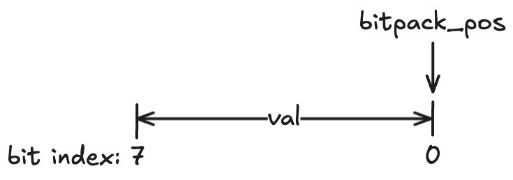
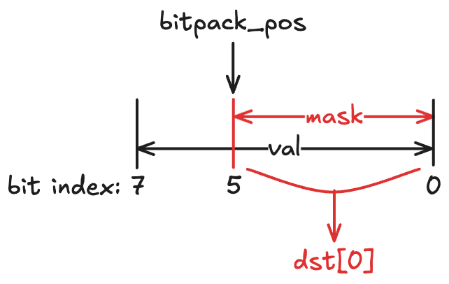
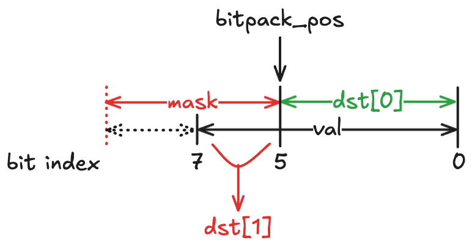
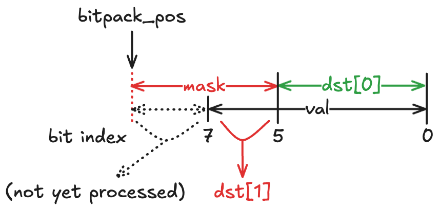
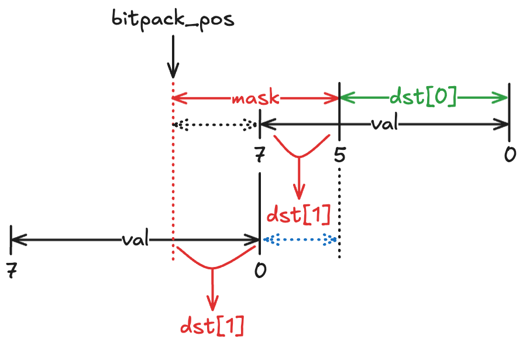
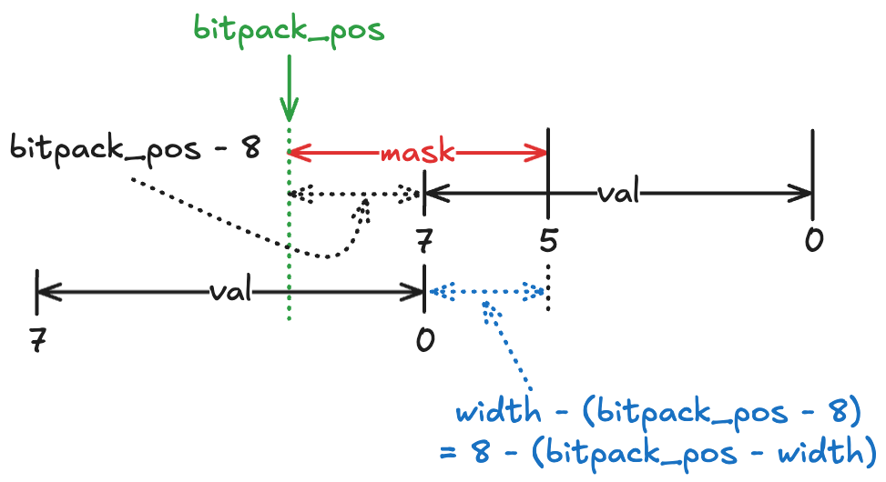

<!DOCTYPE html>
<html><head><title>RLE-BP Hybrid Encoding (Parquet Format)</title><meta charSet="utf-8"/><meta name="viewport" content="width=device-width, initial-scale=1.0"/><meta property="og:title" content="RLE-BP Hybrid Encoding (Parquet Format)"/><meta property="og:description" content="참고한 것들 공홈 (RLE-BP Hybrid) 공홈 (Bit-packed) RLE-BP Hybrid Encoding § Parquet 에서는 RLE 와 BP 를 섞은 encoding 을 사용한다. 이 encoding 방식이 사용되는 경우는 한정적이다: Repetition Level 와 Definition Level encoding 할 때 RLE Dictionary Encoding 에서 dictionary indices 를 encoding 할 때 Boolean value 를 encoding 할 때 Plain Encoding 대신 사용 일단 deprecated 된 BP Encoding 부터 알아보자."/><meta property="og:image" content="https://mdg.haeramk.im/static/og-image.png"/><meta property="og:width" content="1200"/><meta property="og:height" content="675"/><link rel="icon" href="../../../../../../static/icon.png"/><meta name="description" content="참고한 것들 공홈 (RLE-BP Hybrid) 공홈 (Bit-packed) RLE-BP Hybrid Encoding § Parquet 에서는 RLE 와 BP 를 섞은 encoding 을 사용한다. 이 encoding 방식이 사용되는 경우는 한정적이다: Repetition Level 와 Definition Level encoding 할 때 RLE Dictionary Encoding 에서 dictionary indices 를 encoding 할 때 Boolean value 를 encoding 할 때 Plain Encoding 대신 사용 일단 deprecated 된 BP Encoding 부터 알아보자."/><meta name="generator" content="Quartz"/><link rel="preconnect" href="https://fonts.googleapis.com"/><link rel="preconnect" href="https://fonts.gstatic.com"/><link href="../../../../../../index.css" rel="stylesheet" type="text/css" spa-preserve/><link href="https://cdn.jsdelivr.net/npm/katex@0.16.0/dist/katex.min.css" rel="stylesheet" type="text/css" spa-preserve/><link href="https://fonts.googleapis.com/css2?family=IBM Plex Mono&amp;family=Gowun Batang:wght@400;700&amp;family=Gowun Dodum:ital,wght@0,400;0,600;1,400;1,600&amp;display=swap" rel="stylesheet" type="text/css" spa-preserve/><script src="../../../../../../prescript.js" type="application/javascript" spa-preserve></script><script type="application/javascript" spa-preserve>const fetchData = fetch(`../../../../../../static/contentIndex.json`).then(data => data.json())</script></head><body data-slug="gardens/database/format/terms/parquet/spec/RLE-BP-Hybrid-Encoding-(Parquet-Format)"><div id="quartz-root" class="page"><div id="quartz-body"><div class="left sidebar"><h1 class="page-title "><a href="../../../../../..">Madison Digital Garden</a></h1><div class="spacer mobile-only"></div><div class="search "><div id="search-icon"><p>Search</p><div></div><svg tabIndex="0" aria-labelledby="title desc" role="img" xmlns="http://www.w3.org/2000/svg" viewBox="0 0 19.9 19.7"><title id="title">Search</title><desc id="desc">Search</desc><g class="search-path" fill="none"><path stroke-linecap="square" d="M18.5 18.3l-5.4-5.4"></path><circle cx="8" cy="8" r="7"></circle></g></svg></div><div id="search-container"><div id="search-space"><input autocomplete="off" id="search-bar" name="search" type="text" aria-label="Search for something" placeholder="Search for something"/><div id="results-container"></div></div></div></div><div class="darkmode "><input class="toggle" id="darkmode-toggle" type="checkbox" tabIndex="-1"/><label id="toggle-label-light" for="darkmode-toggle" tabIndex="-1"><svg xmlns="http://www.w3.org/2000/svg" xmlnsXlink="http://www.w3.org/1999/xlink" version="1.1" id="dayIcon" x="0px" y="0px" viewBox="0 0 35 35" style="enable-background:new 0 0 35 35;" xmlSpace="preserve"><title>Light mode</title><path d="M6,17.5C6,16.672,5.328,16,4.5,16h-3C0.672,16,0,16.672,0,17.5    S0.672,19,1.5,19h3C5.328,19,6,18.328,6,17.5z M7.5,26c-0.414,0-0.789,0.168-1.061,0.439l-2,2C4.168,28.711,4,29.086,4,29.5    C4,30.328,4.671,31,5.5,31c0.414,0,0.789-0.168,1.06-0.44l2-2C8.832,28.289,9,27.914,9,27.5C9,26.672,8.329,26,7.5,26z M17.5,6    C18.329,6,19,5.328,19,4.5v-3C19,0.672,18.329,0,17.5,0S16,0.672,16,1.5v3C16,5.328,16.671,6,17.5,6z M27.5,9    c0.414,0,0.789-0.168,1.06-0.439l2-2C30.832,6.289,31,5.914,31,5.5C31,4.672,30.329,4,29.5,4c-0.414,0-0.789,0.168-1.061,0.44    l-2,2C26.168,6.711,26,7.086,26,7.5C26,8.328,26.671,9,27.5,9z M6.439,8.561C6.711,8.832,7.086,9,7.5,9C8.328,9,9,8.328,9,7.5    c0-0.414-0.168-0.789-0.439-1.061l-2-2C6.289,4.168,5.914,4,5.5,4C4.672,4,4,4.672,4,5.5c0,0.414,0.168,0.789,0.439,1.06    L6.439,8.561z M33.5,16h-3c-0.828,0-1.5,0.672-1.5,1.5s0.672,1.5,1.5,1.5h3c0.828,0,1.5-0.672,1.5-1.5S34.328,16,33.5,16z     M28.561,26.439C28.289,26.168,27.914,26,27.5,26c-0.828,0-1.5,0.672-1.5,1.5c0,0.414,0.168,0.789,0.439,1.06l2,2    C28.711,30.832,29.086,31,29.5,31c0.828,0,1.5-0.672,1.5-1.5c0-0.414-0.168-0.789-0.439-1.061L28.561,26.439z M17.5,29    c-0.829,0-1.5,0.672-1.5,1.5v3c0,0.828,0.671,1.5,1.5,1.5s1.5-0.672,1.5-1.5v-3C19,29.672,18.329,29,17.5,29z M17.5,7    C11.71,7,7,11.71,7,17.5S11.71,28,17.5,28S28,23.29,28,17.5S23.29,7,17.5,7z M17.5,25c-4.136,0-7.5-3.364-7.5-7.5    c0-4.136,3.364-7.5,7.5-7.5c4.136,0,7.5,3.364,7.5,7.5C25,21.636,21.636,25,17.5,25z"></path></svg></label><label id="toggle-label-dark" for="darkmode-toggle" tabIndex="-1"><svg xmlns="http://www.w3.org/2000/svg" xmlnsXlink="http://www.w3.org/1999/xlink" version="1.1" id="nightIcon" x="0px" y="0px" viewBox="0 0 100 100" style="enable-background='new 0 0 100 100'" xmlSpace="preserve"><title>Dark mode</title><path d="M96.76,66.458c-0.853-0.852-2.15-1.064-3.23-0.534c-6.063,2.991-12.858,4.571-19.655,4.571  C62.022,70.495,50.88,65.88,42.5,57.5C29.043,44.043,25.658,23.536,34.076,6.47c0.532-1.08,0.318-2.379-0.534-3.23  c-0.851-0.852-2.15-1.064-3.23-0.534c-4.918,2.427-9.375,5.619-13.246,9.491c-9.447,9.447-14.65,22.008-14.65,35.369  c0,13.36,5.203,25.921,14.65,35.368s22.008,14.65,35.368,14.65c13.361,0,25.921-5.203,35.369-14.65  c3.872-3.871,7.064-8.328,9.491-13.246C97.826,68.608,97.611,67.309,96.76,66.458z"></path></svg></label></div></div><div class="center"><div class="page-header"><div class="popover-hint"><h1 class="article-title ">RLE-BP Hybrid Encoding (Parquet Format)</h1><p class="content-meta ">Jan 09, 2025, 10 min read</p><ul class="tags "><li><a href="../../../../../../tags/database" class="internal tag-link">#database</a></li><li><a href="../../../../../../tags/db-format" class="internal tag-link">#db-format</a></li><li><a href="../../../../../../tags/db-parquet" class="internal tag-link">#db-parquet</a></li></ul></div></div><article class="popover-hint"><blockquote class="callout is-collapsible is-collapsed" data-callout="info" data-callout-fold>
<div class="callout-title">
                  <div class="callout-icon"><svg xmlns="http://www.w3.org/2000/svg" width="100%" height="100%" viewBox="0 0 24 24" fill="none" stroke="currentColor" stroke-width="2" stroke-linecap="round" stroke-linejoin="round"><circle cx="12" cy="12" r="10"></circle><line x1="12" y1="16" x2="12" y2="12"></line><line x1="12" y1="8" x2="12.01" y2="8"></line></svg></div>
                  <div class="callout-title-inner"><p>참고한 것들 </p></div>
                  <svg xmlns="http://www.w3.org/2000/svg" width="24" height="24" viewBox="0 0 24 24" fill="none" stroke="currentColor" stroke-width="2" stroke-linecap="round" stroke-linejoin="round" class="fold">
                  <polyline points="6 9 12 15 18 9"></polyline>
                </svg>
                </div>
<ul>
<li><a href="https://parquet.apache.org/docs/file-format/data-pages/encodings/#run-length-encoding--bit-packing-hybrid-rle--3" class="external">공홈 (RLE-BP Hybrid)</a></li>
<li><a href="https://parquet.apache.org/docs/file-format/data-pages/encodings/#bit-packed-deprecated-bit_packed--4" class="external">공홈 (Bit-packed)</a></li>
</ul>
</blockquote>
<h2 id="rle-bp-hybrid-encoding">RLE-BP Hybrid Encoding<a aria-hidden="true" tabindex="-1" href="#rle-bp-hybrid-encoding" class="internal"> §</a></h2>
<ul>
<li><a href="../../../../../../gardens/database/format/terms/parquet/Parquet-(Database-Format)" class="internal" data-slug="gardens/database/format/terms/parquet/Parquet-(Database-Format)">Parquet</a> 에서는 <a href="../../../../../../gardens/database/encoding/terms/Run-Length-Encoding,-RLE-(Encoding)" class="internal" data-slug="gardens/database/encoding/terms/Run-Length-Encoding,-RLE-(Encoding)">RLE</a> 와 <a href="../../../../../../gardens/database/encoding/terms/Bit-Packing,-BP-(Encoding)" class="internal" data-slug="gardens/database/encoding/terms/Bit-Packing,-BP-(Encoding)">BP</a> 를 섞은 encoding 을 사용한다.
<ul>
<li>이 encoding 방식이 사용되는 경우는 한정적이다:
<ol>
<li><a href="../../../../../../gardens/database/format/papers/dremel.2010.pvldb.vldb.org/full/4.-Nested-Columnar-Storage-(Dremel,-VLDB-10)" class="internal" data-slug="gardens/database/format/papers/dremel.2010.pvldb.vldb.org/full/4.-Nested-Columnar-Storage-(Dremel,-VLDB-10)">Repetition Level</a> 와 <a href="../../../../../../gardens/database/format/papers/dremel.2010.pvldb.vldb.org/full/4.-Nested-Columnar-Storage-(Dremel,-VLDB-10)" class="internal" data-slug="gardens/database/format/papers/dremel.2010.pvldb.vldb.org/full/4.-Nested-Columnar-Storage-(Dremel,-VLDB-10)">Definition Level</a> encoding 할 때</li>
<li><a href="../../../../../../gardens/database/format/terms/parquet/spec/RLE-Dictionary-Encoding-(Parquet-Format)" class="internal" data-slug="gardens/database/format/terms/parquet/spec/RLE-Dictionary-Encoding-(Parquet-Format)">RLE Dictionary Encoding</a> 에서 dictionary indices 를 encoding 할 때</li>
<li>Boolean value 를 encoding 할 때 <a href="../../../../../../gardens/database/format/terms/parquet/spec/Plain-Encoding-(Parquet-Format)" class="internal" data-slug="gardens/database/format/terms/parquet/spec/Plain-Encoding-(Parquet-Format)">Plain Encoding</a> 대신 사용</li>
</ol>
</li>
</ul>
</li>
<li>일단 deprecated 된 BP Encoding 부터 알아보자.</li>
</ul>
<h2 id="bit-packed-deprecated-bit_packed4">Bit-packed (Deprecated) (<code>BIT_PACKED=4</code>)<a aria-hidden="true" tabindex="-1" href="#bit-packed-deprecated-bit_packed4" class="internal"> §</a></h2>
<ul>
<li>간단하다. 어떤 값을 fixed-width 로 bit-packing 해서 MSB 부터 채우는 방식이다.</li>
<li>공식 문서에 있는 예시를 보면,</li>
</ul>
<pre><code>dec value: 0   1   2   3   4   5   6   7
bit value: 000 001 010 011 100 101 110 111
bit label: ABC DEF GHI JKL MNO PQR STU VWX
</code></pre>
<ul>
<li>이렇게 width 가 3 인 8 개의 값을 BP 하면,</li>
</ul>
<pre><code>bit value: 00000101 00111001 01110111
bit label: ABCDEFGH IJKLMNOP QRSTUVWX
</code></pre>
<ul>
<li>이렇게 MSB 부터 차곡차곡 채워지게 된다.</li>
<li>이 방식은 Parquet 2.0 spec 부터는 deprecated 되었다. 이제부터 설명할 RLE-BP Hybrid 가 이 encoding 의 superset 이기 때문.</li>
</ul>
<h2 id="run-length-encoding-bit-packing-hybrid-rle3">Run Length Encoding, Bit-Packing Hybrid (<code>RLE=3</code>)<a aria-hidden="true" tabindex="-1" href="#run-length-encoding-bit-packing-hybrid-rle3" class="internal"> §</a></h2>
<ul>
<li>이건 RLE 와 BP 를 “Hybrid” 해놓은 것이다.
<ul>
<li>여기서 “Hybrid” 를 강조해 놓은 이유는, RLE 와 BP 가 fusing 된 것이 아니기 때문이다.</li>
<li>즉, RLE 를 한 다음에 이것을 BP 해서 저장하는게 아니고, RLE “혹은” BP 로 encoding 하는 방식이다.</li>
</ul>
</li>
<li>Encoding 방식을 차근차근 보자. 일단 전체 구조는 다음과 같다.</li>
</ul>
<h3 id="overall-layout">Overall Layout<a aria-hidden="true" tabindex="-1" href="#overall-layout" class="internal"> §</a></h3>
<pre><code>+--------+--------------+
| LENGTH | ENCODED DATA |
+--------+--------------+
</code></pre>
<ul>
<li>저 <code>LENGTH</code> 는 <code>ENCODED DATA</code> 에 대한 byte 단위 사이즈인데, 이놈이 항상 붙는 것은 아니다.</li>
<li>만약에 page header 같은데에 이 길이가 적히는 경우에는 굳이 적지 않게 된다.
<ul>
<li>가령 <a href="https://github.com/apache/parquet-format/blob/d784f11f4485e64fdeaa614e0bde125f5132093d/src/main/thrift/parquet.thrift#L593-L615" class="external">data page header v1</a> 의 경우에는, <a href="../../../../../../gardens/database/format/papers/dremel.2010.pvldb.vldb.org/full/4.-Nested-Columnar-Storage-(Dremel,-VLDB-10)" class="internal" data-slug="gardens/database/format/papers/dremel.2010.pvldb.vldb.org/full/4.-Nested-Columnar-Storage-(Dremel,-VLDB-10)">Definition Level</a> 이나 <a href="../../../../../../gardens/database/format/papers/dremel.2010.pvldb.vldb.org/full/4.-Nested-Columnar-Storage-(Dremel,-VLDB-10)" class="internal" data-slug="gardens/database/format/papers/dremel.2010.pvldb.vldb.org/full/4.-Nested-Columnar-Storage-(Dremel,-VLDB-10)">Repetition Level</a> 에 RLE-BP Encoding 을 사용할 때 이놈의 데이터 사이즈를 적어줄 방법이 없기 때문에 이런 <code>LENGTH</code> 가 붙는다.</li>
<li>하지만 <a href="https://github.com/apache/parquet-format/blob/d784f11f4485e64fdeaa614e0bde125f5132093d/src/main/thrift/parquet.thrift#L637-L673" class="external">data page header v2</a> 에서는 이 사이즈를 적어주는 field 가 추가되었고, 따라서 더이상 저 <code>LENGTH</code> 가 붙지 않는다.</li>
</ul>
</li>
<li>공식문서에 나와있는 저 <code>LENGTH</code> 를 붙이냐 마냐에 대한 표는 다음과 같다.</li>
</ul>


<table><thead><tr><th>Page kind</th><th>RLE-encoded data kind</th><th>Prepend length?</th></tr></thead><tbody><tr><td>Data page v1</td><td>Definition levels</td><td>Y</td></tr><tr><td></td><td>Repetition levels</td><td>Y</td></tr><tr><td></td><td>Dictionary indices</td><td>N</td></tr><tr><td></td><td>Boolean values</td><td>Y</td></tr><tr><td>Data page v2</td><td>Definition levels</td><td>N</td></tr><tr><td></td><td>Repetition levels</td><td>N</td></tr><tr><td></td><td>Dictionary indices</td><td>N</td></tr><tr><td></td><td>Boolean values</td><td>Y</td></tr></tbody></table>
<h3 id="encoded-data--runs"><code>ENCODED DATA</code> = <code>RUN</code>s<a aria-hidden="true" tabindex="-1" href="#encoded-data--runs" class="internal"> §</a></h3>
<ul>
<li>그리고 저 <code>ENCODED DATA</code> 는 <code>RUN</code> 들로 이루어져있고, <code>RUN</code> 은 <code>HEADER</code> 와 <code>VALUE</code> 로 구성되어 있다.
<ul>
<li>여기서 조심할 것은 저 <code>RUN</code> 이라는 것이 RLE 에서의 Run 으로 이해하면 안된다는 것이다.</li>
<li>즉, 이 <code>RUN</code> 은 그냥 하나의 단위이고, 저 단위는 RLE 로 encoding 되어있을 수도 있고 BP 로 encoding 되어있을 수도 있는 것.</li>
</ul>
</li>
</ul>
<pre><code>&lt;----- RUN ----->&lt;----- RUN ----->&lt;----- RUN ------> ...
+--------+-------+--------+-------+--------+-------+
| HEADER | VALUE | HEADER | VALUE | HEADER | VALUE | ...
+--------+-------+--------+-------+--------+-------+
</code></pre>
<h3 id="header"><code>HEADER</code><a aria-hidden="true" tabindex="-1" href="#header" class="internal"> §</a></h3>
<ul>
<li>여기서 저 <code>VALUE</code> 의 길이와, 이 <code>VALUE</code> 가 RLE 인지 BP 인지를 나타내는 정보가 <code>HEADER</code> 이다.</li>
<li>일단 BP 의 경우에는 다음과 같이 <code>HEADER</code> 가 구성된다.</li>
</ul>
<pre><code>HEADER = VARINT( BP VALUE COUNT &lt;&lt; 1 | 1 )
</code></pre>
<ul>
<li>그리고 RLE 의 경우에는 다음과 같이 <code>HEADER</code> 가 구성된다.</li>
</ul>
<pre><code>HEADER = VARINT( RLE VALUE COUNT &lt;&lt; 1 )
</code></pre>
<ul>
<li>보면 모두 <code>... VALUE COUNT</code> 라는 것이 일단 왼쪽으로 shift 되고, BP 의 경우에만 1 이 <code>OR</code> 된 뒤에 <a href="../../../../../../gardens/database/encoding/terms/Little-Endian-Base-128,-LEB128-(Encoding)" class="internal" data-slug="gardens/database/encoding/terms/Little-Endian-Base-128,-LEB128-(Encoding)">LEB128</a> 로 encoding 된다는 것을 알 수 있다.</li>
<li>따라서 LEB128 을 decoding 한 다음에 LSB 가 1인지 0인지를 확인하면 이것이 BP encoding 인지 RLE encoding 인지 알 수 있게 된다.</li>
</ul>
<blockquote class="callout is-collapsible is-collapsed" data-callout="tip" data-callout-fold>
<div class="callout-title">
                  <div class="callout-icon"><svg xmlns="http://www.w3.org/2000/svg" width="100%" height="100%" viewBox="0 0 24 24" fill="none" stroke="currentColor" stroke-width="2" stroke-linecap="round" stroke-linejoin="round"><path d="M8.5 14.5A2.5 2.5 0 0 0 11 12c0-1.38-.5-2-1-3-1.072-2.143-.224-4.054 2-6 .5 2.5 2 4.9 4 6.5 2 1.6 3 3.5 3 5.5a7 7 0 1 1-14 0c0-1.153.433-2.294 1-3a2.5 2.5 0 0 0 2.5 2.5z"></path></svg></div>
                  <div class="callout-title-inner"><p>DuckDB CodeRef </p></div>
                  <svg xmlns="http://www.w3.org/2000/svg" width="24" height="24" viewBox="0 0 24 24" fill="none" stroke="currentColor" stroke-width="2" stroke-linecap="round" stroke-linejoin="round" class="fold">
                  <polyline points="6 9 12 15 18 9"></polyline>
                </svg>
                </div>
<ul>
<li><a href="https://github.com/duckdb/duckdb/blob/c28ce393504163a415670d5267ddf5b6a0d75582/extension/parquet/include/parquet_rle_bp_decoder.hpp#L84-L114" class="external">DuckDB (NextCount)</a></li>
</ul>
</blockquote>
<ul>
<li>여기서 저 <code>VALUE COUNT</code> 가 의미하는 바는 BP 와 RLE 각각에 대해 다르다.</li>
<li>일단 BP 는 다음과 같다.</li>
</ul>
<pre><code>BP VALUE COUNT = (NUMBER OF VALUES) / 8
</code></pre>
<ul>
<li>왜 이렇게 하냐:
<ul>
<li>BP 는 bit 단위이기 때문에, 항상 8의 배수 개수의 value 들을 BP 해야만 byte 단위로 끊어지게 된다.</li>
<li>따라서 실제 encoding 된 value 들의 개수를 8로 나누어 저장하게 되는 것.</li>
</ul>
</li>
<li>그리고 RLE 는 다음과 같다.</li>
</ul>
<pre><code>RLE VALUE COUNT = (NUMBER OF REPEATED VALUES)
</code></pre>
<ul>
<li>보다시피 RLE 는 반복되는 값을 “몇번 반복되냐” 와 “뭐가 반복되냐” 두가지 정보로 encoding 하기 때문에, 이 <code>RLE VALUE COUNT</code> 로서 “몇번 반복되냐” 가 저장되는 것을 알 수 있다.</li>
</ul>
<h3 id="value"><code>VALUE</code><a aria-hidden="true" tabindex="-1" href="#value" class="internal"> §</a></h3>
<ul>
<li>RLE 는 이 <code>VALUE</code> 로서 그냥 “반복되는 값” 이 적혀있다.</li>
<li>다만, byte 단위의 packing 정도는 되어 있다. 즉, 어떤 값이 3bit 로 표현된다면 이 값은 1byte 로 저장되는 것 (<em>round-up-to-next-byte</em>).</li>
<li>골치아픈건 BP 이다. 위의 deprecated 된 <a href="#bit-packed-deprecated-bit_packed4" class="internal">Bit-packed</a> 방식과는 다르게, BP 된 값들이 LSB 부터 채워진다.</li>
<li>즉, 공식문서의 예시를 가져오면, 아래와 같은 값들이</li>
</ul>
<pre><code>dec value: 0   1   2   3   4   5   6   7
bit value: 000 001 010 011 100 101 110 111
bit label: ABC DEF GHI JKL MNO PQR STU VWX
</code></pre>
<ul>
<li>이렇게 packing 된다는 것.</li>
</ul>
<pre><code>bit value: 10001000 11000110 11111010
bit label: HIDEFABC RMNOJKLG VWXSTUPQ
dev value: 22111000 54443332 77766655
</code></pre>
<ul>
<li>이놈을 unpacking 하는 것은 코드로 한번 확인해 보자.</li>
</ul>
<h3 id="bp-unpacking-duckdb">BP Unpacking (DuckDB)<a aria-hidden="true" tabindex="-1" href="#bp-unpacking-duckdb" class="internal"> §</a></h3>
<blockquote class="callout is-collapsible is-collapsed" data-callout="tip" data-callout-fold>
<div class="callout-title">
                  <div class="callout-icon"><svg xmlns="http://www.w3.org/2000/svg" width="100%" height="100%" viewBox="0 0 24 24" fill="none" stroke="currentColor" stroke-width="2" stroke-linecap="round" stroke-linejoin="round"><path d="M8.5 14.5A2.5 2.5 0 0 0 11 12c0-1.38-.5-2-1-3-1.072-2.143-.224-4.054 2-6 .5 2.5 2 4.9 4 6.5 2 1.6 3 3.5 3 5.5a7 7 0 1 1-14 0c0-1.153.433-2.294 1-3a2.5 2.5 0 0 0 2.5 2.5z"></path></svg></div>
                  <div class="callout-title-inner"><p>DuckDB CodeRef </p></div>
                  <svg xmlns="http://www.w3.org/2000/svg" width="24" height="24" viewBox="0 0 24 24" fill="none" stroke="currentColor" stroke-width="2" stroke-linecap="round" stroke-linejoin="round" class="fold">
                  <polyline points="6 9 12 15 18 9"></polyline>
                </svg>
                </div>
<ul>
<li><a href="https://github.com/duckdb/duckdb/blob/c28ce393504163a415670d5267ddf5b6a0d75582/extension/parquet/include/decode_utils.hpp#L34-L59" class="external">DuckDB (BP decoder)</a></li>
<li><a href="https://github.com/duckdb/duckdb/blob/c28ce393504163a415670d5267ddf5b6a0d75582/extension/parquet/column_reader.cpp#L38-L106" class="external">DuckDB (BP decoder constants)</a></li>
</ul>
</blockquote>
<ul>
<li>BP unpack 하는 DuckDB 코드는 다음과 같다.</li>
</ul>
<div data-rehype-pretty-code-fragment><pre style="background-color:var(--shiki-color-background);" tabindex="0" data-language="C++" data-theme="default"><code data-language="C++" data-theme="default"><span data-line><span style="color:var(--shiki-color-text);">template &lt;class T></span></span>
<span data-line><span style="color:var(--shiki-color-text);">static void BitUnpack(ByteBuffer &amp;src, bitpacking_width_t &amp;bitpack_pos, T *dst, idx_t count,</span></span>
<span data-line><span style="color:var(--shiki-color-text);">					  const bitpacking_width_t width) {</span></span>
<span data-line><span style="color:var(--shiki-color-text);">	CheckWidth(width);</span></span>
<span data-line><span style="color:var(--shiki-color-text);">	const auto mask = BITPACK_MASKS[width];</span></span>
<span data-line><span style="color:var(--shiki-color-text);">	src.available(count * width / BITPACK_DLEN); // check if buffer has enough space available once</span></span>
<span data-line><span style="color:var(--shiki-color-text);">	if (bitpack_pos == 0 &amp;&amp; count >= BitpackingPrimitives::BITPACKING_ALGORITHM_GROUP_SIZE) {</span></span>
<span data-line><span style="color:var(--shiki-color-text);">		idx_t remainder = count % BitpackingPrimitives::BITPACKING_ALGORITHM_GROUP_SIZE;</span></span>
<span data-line><span style="color:var(--shiki-color-text);">		idx_t aligned_count = count - remainder;</span></span>
<span data-line><span style="color:var(--shiki-color-text);">		BitUnpackAlignedInternal(src, dst, aligned_count, width);</span></span>
<span data-line><span style="color:var(--shiki-color-text);">		dst += aligned_count;</span></span>
<span data-line><span style="color:var(--shiki-color-text);">		count = remainder;</span></span>
<span data-line><span style="color:var(--shiki-color-text);">	}</span></span>
<span data-line><span style="color:var(--shiki-color-text);">	for (idx_t i = 0; i &lt; count; i++) {</span></span>
<span data-line><span style="color:var(--shiki-color-text);">		auto val = (src.unsafe_get&lt;uint8_t>() >> bitpack_pos) &amp; mask;</span></span>
<span data-line><span style="color:var(--shiki-color-text);">		bitpack_pos += width;</span></span>
<span data-line><span style="color:var(--shiki-color-text);">		while (bitpack_pos > BITPACK_DLEN) {</span></span>
<span data-line><span style="color:var(--shiki-color-text);">			src.unsafe_inc(1);</span></span>
<span data-line><span style="color:var(--shiki-color-text);">			val |= (static_cast&lt;T>(src.unsafe_get&lt;uint8_t>())</span></span>
<span data-line><span style="color:var(--shiki-color-text);">					&lt;&lt; static_cast&lt;T>(BITPACK_DLEN - (bitpack_pos - width))) &amp;</span></span>
<span data-line><span style="color:var(--shiki-color-text);">				   mask;</span></span>
<span data-line><span style="color:var(--shiki-color-text);">			bitpack_pos -= BITPACK_DLEN;</span></span>
<span data-line><span style="color:var(--shiki-color-text);">		}</span></span>
<span data-line><span style="color:var(--shiki-color-text);">		dst[i] = val;</span></span>
<span data-line><span style="color:var(--shiki-color-text);">	}</span></span>
<span data-line><span style="color:var(--shiki-color-text);">}</span></span></code></pre></div>
<ul>
<li>여기서 눈여겨봐야할 곳은 저기 <code>for</code> loop 안쪽이다. 이부분을 차근차근 살펴보자.
<ul>
<li>일단 저기서 <code>mask</code> 는 width 에 대해서 모두 LSB 부터 <code>1</code> 로 bit 가 켜져있는 값이다.
<ul>
<li>즉, 예를들어 만약에 width 가 3이라면 <code>111b</code> (<code>0x07</code>) 이고, width 가 7 이면 <code>1111111b</code> (<code>0x007F</code>) 인것.</li>
<li>이렇게 32bit 기준 33 개의 가능한 width 에 대해 모두 mask 를 계산해서 constant array 에 넣어놓고, 요청된 width 에 맞는 mask 를 가져와 저장한 변수가 <code>mask</code> 이다.</li>
</ul>
</li>
<li>그리고 <code>val</code> 은 현재 처리중인 byte 를 저장하는 변수이고, <code>bitpack_pos</code> 는 mask 가 씌워질 offset 를 의미한다.</li>
</ul>
</li>
<li>이렇게만 말하면 뭔소린지 이해가 안될텐데, <code>width=5</code> 인 예시를 가지고 살펴보자.</li>
<li>우선 <code>val</code> 에 byte 를 하나 읽어왔다고 해보자.
<ul>
<li><code>bitpack_pos</code> 의 초기값은 0이다.</li>
</ul>
</li>
</ul>
<p></p>
<ul>
<li>그리고 <code>bitpack_pos</code> 부터 width 만큼 <code>mask</code> 를 씌워서 가져온 뒤, width 만큼 <code>bitpack_pos</code> 를 움직인다.</li>
</ul>
<p></p>
<ul>
<li>보면 알 수 있다시피, 이 경우에는 width 만큼의 bit 를 모두 unpack 했으므로 더이상 할게 없다.
<ul>
<li>코드에서 생각해 보면 <code>bitpack_pos</code> 가 5 이고, byte 의 크기를 의미하는 constant 인 <code>BITPACK_DLEN</code> 는 8 이기 때문에 <code>while</code> loop 은 돌지 않고 끝난다.</li>
</ul>
</li>
<li>그리고 <code>for</code> loop 을 돌아 다음 값을 unpack 할 때를 보자.</li>
<li>이전의 byte 를 <code>bitpack_pos</code> 만큼 shift 하고, mask 를 씌우는 것은 다음과 동일하다.</li>
</ul>
<p></p>
<ul>
<li>그리고 <code>bitpack_pos</code> 를 width 만큼 움직이면 다음과 같다.</li>
</ul>
<p></p>
<ul>
<li>즉, 이번에는 8 을 넘어가게 되어 <code>while</code> loop 을 돌게 된다.</li>
</ul>
<p></p>
<ul>
<li>여기서는 일단 <code>src.unsafe_inc(1)</code> 로 다음 byte 를 가져오게 되고, 이놈을 저 “파란색 점선 화살표” 만큼 shift 한 뒤 mask 를 씌워 이전에 갖고온 값과 <code>OR</code> 를 해주면 될 것이다.</li>
<li>그럼 저 “파란색 점선 화살표” 의 크기는 어떻게 구할까.</li>
</ul>
<p></p>
<ul>
<li>사실 그림으로 보는게 더 편하다: 검은색 점선의 크기가 <code>bitpack_pos - 8</code> 이기 때문에 저 파란색 점선의 크기는 <code>8 - (bitpack_pos - width)</code> 가 된다.</li>
<li>이 로직을 통해 1byte 안에 들어오는 값과 여러 byte 에 걸치는 값을 깔끔하게 unpacking 할 수 있게 된다.</li>
</ul></article></div><div class="right sidebar"><div class="graph "><h3>Graph View</h3><div class="graph-outer"><div id="graph-container" data-cfg="{&quot;drag&quot;:true,&quot;zoom&quot;:true,&quot;depth&quot;:1,&quot;scale&quot;:1.1,&quot;repelForce&quot;:0.5,&quot;centerForce&quot;:0.3,&quot;linkDistance&quot;:30,&quot;fontSize&quot;:0.6,&quot;opacityScale&quot;:1,&quot;showTags&quot;:true,&quot;removeTags&quot;:[]}"></div><svg version="1.1" id="global-graph-icon" xmlns="http://www.w3.org/2000/svg" xmlnsXlink="http://www.w3.org/1999/xlink" x="0px" y="0px" viewBox="0 0 55 55" fill="currentColor" xmlSpace="preserve"><path d="M49,0c-3.309,0-6,2.691-6,6c0,1.035,0.263,2.009,0.726,2.86l-9.829,9.829C32.542,17.634,30.846,17,29,17
	s-3.542,0.634-4.898,1.688l-7.669-7.669C16.785,10.424,17,9.74,17,9c0-2.206-1.794-4-4-4S9,6.794,9,9s1.794,4,4,4
	c0.74,0,1.424-0.215,2.019-0.567l7.669,7.669C21.634,21.458,21,23.154,21,25s0.634,3.542,1.688,4.897L10.024,42.562
	C8.958,41.595,7.549,41,6,41c-3.309,0-6,2.691-6,6s2.691,6,6,6s6-2.691,6-6c0-1.035-0.263-2.009-0.726-2.86l12.829-12.829
	c1.106,0.86,2.44,1.436,3.898,1.619v10.16c-2.833,0.478-5,2.942-5,5.91c0,3.309,2.691,6,6,6s6-2.691,6-6c0-2.967-2.167-5.431-5-5.91
	v-10.16c1.458-0.183,2.792-0.759,3.898-1.619l7.669,7.669C41.215,39.576,41,40.26,41,41c0,2.206,1.794,4,4,4s4-1.794,4-4
	s-1.794-4-4-4c-0.74,0-1.424,0.215-2.019,0.567l-7.669-7.669C36.366,28.542,37,26.846,37,25s-0.634-3.542-1.688-4.897l9.665-9.665
	C46.042,11.405,47.451,12,49,12c3.309,0,6-2.691,6-6S52.309,0,49,0z M11,9c0-1.103,0.897-2,2-2s2,0.897,2,2s-0.897,2-2,2
	S11,10.103,11,9z M6,51c-2.206,0-4-1.794-4-4s1.794-4,4-4s4,1.794,4,4S8.206,51,6,51z M33,49c0,2.206-1.794,4-4,4s-4-1.794-4-4
	s1.794-4,4-4S33,46.794,33,49z M29,31c-3.309,0-6-2.691-6-6s2.691-6,6-6s6,2.691,6,6S32.309,31,29,31z M47,41c0,1.103-0.897,2-2,2
	s-2-0.897-2-2s0.897-2,2-2S47,39.897,47,41z M49,10c-2.206,0-4-1.794-4-4s1.794-4,4-4s4,1.794,4,4S51.206,10,49,10z"></path></svg></div><div id="global-graph-outer"><div id="global-graph-container" data-cfg="{&quot;drag&quot;:true,&quot;zoom&quot;:true,&quot;depth&quot;:-1,&quot;scale&quot;:0.9,&quot;repelForce&quot;:0.5,&quot;centerForce&quot;:0.3,&quot;linkDistance&quot;:30,&quot;fontSize&quot;:0.6,&quot;opacityScale&quot;:1,&quot;showTags&quot;:true,&quot;removeTags&quot;:[]}"></div></div></div><div class="toc desktop-only"><button type="button" id="toc"><h3>Table of Contents</h3><svg xmlns="http://www.w3.org/2000/svg" width="24" height="24" viewBox="0 0 24 24" fill="none" stroke="currentColor" stroke-width="2" stroke-linecap="round" stroke-linejoin="round" class="fold"><polyline points="6 9 12 15 18 9"></polyline></svg></button><div id="toc-content"><ul class="overflow"><li class="depth-0"><a href="#rle-bp-hybrid-encoding" data-for="rle-bp-hybrid-encoding">RLE-BP Hybrid Encoding</a></li><li class="depth-0"><a href="#bit-packed-deprecated-bit_packed4" data-for="bit-packed-deprecated-bit_packed4">Bit-packed (Deprecated) (BIT_PACKED=4)</a></li><li class="depth-0"><a href="#run-length-encoding-bit-packing-hybrid-rle3" data-for="run-length-encoding-bit-packing-hybrid-rle3">Run Length Encoding, Bit-Packing Hybrid (RLE=3)</a></li><li class="depth-1"><a href="#overall-layout" data-for="overall-layout">Overall Layout</a></li><li class="depth-1"><a href="#encoded-data--runs" data-for="encoded-data--runs">ENCODED DATA = RUNs</a></li><li class="depth-1"><a href="#header" data-for="header">HEADER</a></li><li class="depth-1"><a href="#value" data-for="value">VALUE</a></li><li class="depth-1"><a href="#bp-unpacking-duckdb" data-for="bp-unpacking-duckdb">BP Unpacking (DuckDB)</a></li></ul></div></div><div class="backlinks "><h3>Backlinks</h3><ul class="overflow"><li><a href="../../../../../../gardens/database/format/terms/parquet/Parquet-(Database-Format)" class="internal">Parquet (Database Format)</a></li><li><a href="../../../../../../gardens/database/format/terms/parquet/spec/RLE-Dictionary-Encoding-(Parquet-Format)" class="internal">RLE Dictionary Encoding (Parquet Format)</a></li></ul></div></div></div><footer class><hr/><p>Created with <a href="https://quartz.jzhao.xyz/">Quartz v4.1.0</a>, © 2025</p><ul><li><a href="https://github.com/haeramkeem">GitHub</a></li><li><a href="https://www.linkedin.com/in/haeram-kim-277404220">LinkedIn</a></li><li><a href="mailto:haeram.kim1@gmail.com">Email</a></li></ul></footer></div></body><script type="application/javascript">// quartz/components/scripts/quartz/components/scripts/callout.inline.ts
function toggleCallout() {
  const outerBlock = this.parentElement;
  outerBlock.classList.toggle(`is-collapsed`);
  const collapsed = outerBlock.classList.contains(`is-collapsed`);
  const height = collapsed ? this.scrollHeight : outerBlock.scrollHeight;
  outerBlock.style.maxHeight = height + `px`;
  let current = outerBlock;
  let parent = outerBlock.parentElement;
  while (parent) {
    if (!parent.classList.contains(`callout`)) {
      return;
    }
    const collapsed2 = parent.classList.contains(`is-collapsed`);
    const height2 = collapsed2 ? parent.scrollHeight : parent.scrollHeight + current.scrollHeight;
    parent.style.maxHeight = height2 + `px`;
    current = parent;
    parent = parent.parentElement;
  }
}
function setupCallout() {
  const collapsible = document.getElementsByClassName(
    `callout is-collapsible`
  );
  for (const div of collapsible) {
    const title = div.firstElementChild;
    if (title) {
      title.removeEventListener(`click`, toggleCallout);
      title.addEventListener(`click`, toggleCallout);
      const collapsed = div.classList.contains(`is-collapsed`);
      const height = collapsed ? title.scrollHeight : div.scrollHeight;
      div.style.maxHeight = height + `px`;
    }
  }
}
document.addEventListener(`nav`, setupCallout);
window.addEventListener(`resize`, setupCallout);
</script><script type="module">
          import mermaid from 'https://cdn.jsdelivr.net/npm/mermaid/dist/mermaid.esm.min.mjs';
          const darkMode = document.documentElement.getAttribute('saved-theme') === 'dark'
          mermaid.initialize({
            startOnLoad: false,
            securityLevel: 'loose',
            theme: darkMode ? 'dark' : 'default'
          });
          document.addEventListener('nav', async () => {
            await mermaid.run({
              querySelector: '.mermaid'
            })
          });
          </script><script src="https://cdn.jsdelivr.net/npm/katex@0.16.7/dist/contrib/copy-tex.min.js" type="application/javascript"></script><script src="https://www.googletagmanager.com/gtag/js?id=G-N68CCP1QHG" type="application/javascript"></script><script src="../../../../../../postscript.js" type="module"></script></html>